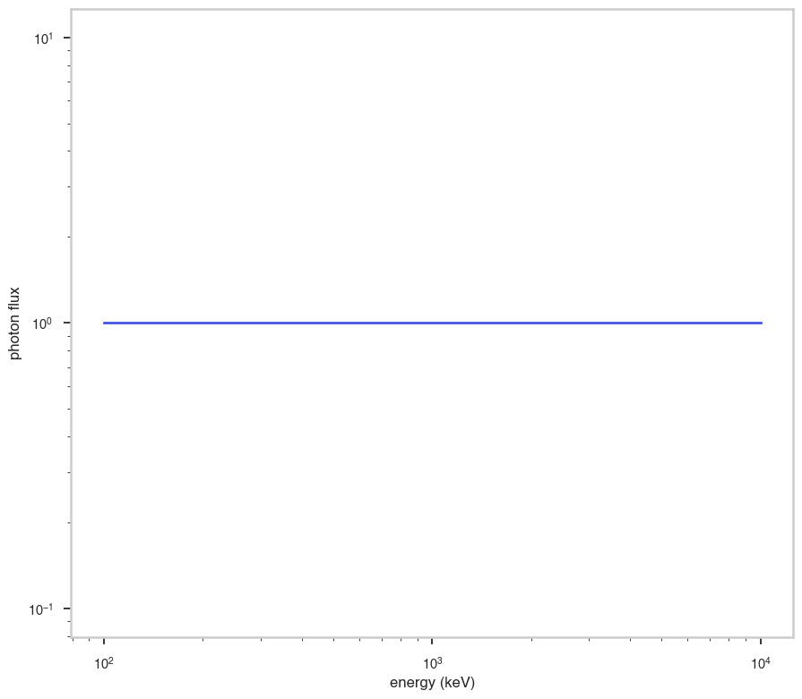
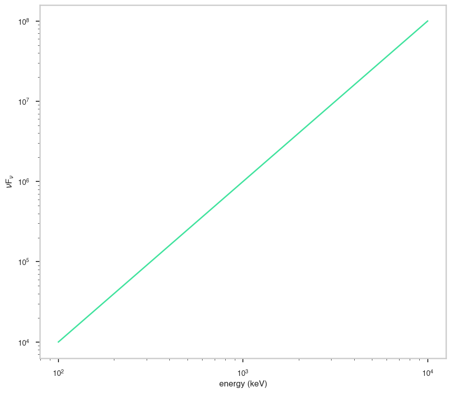

ZDust
[3]:
# Parameters
func_name = "ZDust"
wide_energy_range = True
x_scale = "log"
y_scale = "log"
linear_range = False
Description
[5]:
func.display()
- description: Extinction by dust grains from Pei (1992), suitable for IR, optical and UV energy bands, including the full energy ranges of the Swift UVOT and XMM-Newton OM detectors. Three models are included which characterize the extinction curves of (1) the Milky Way, (2) the LMC and (3) the SMC. The models can be modified by redshift and can therefore be applied to extragalactic sources. The transmission is set to unity shortward of 912 Angstroms in the rest frame of the dust. This is incorrect physically but does allow the model to be used in combination with an X-ray photoelectric absorption model such as phabs. Parameter 1 (method) describes which extinction curve (MW, LMC or SMC) will be constructed and should never be allowed to float during a fit. The extinction at V, A(V) = E(B-V) x Rv. Rv should typically remain frozen for a fit. Standard values for Rv are MW = 3.08, LMC = 3.16 and SMC = 2.93 (from table 2 of Pei 1992), although these may not be applicable to more distant dusty sources.
- formula: $n.a.$
- parameters:
- e_bmv:
- value: 1.0
- desc: color excess
- min_value: 0.0
- max_value: None
- unit:
- is_normalization: False
- delta: 0.1
- free: True
- rv:
- value: 3.08
- desc: ratio of total to selective extinction
- min_value: None
- max_value: None
- unit:
- is_normalization: False
- delta: 0.1
- free: False
- redshift:
- value: 0.0
- desc: the redshift of the source
- min_value: 0.0
- max_value: 15.0
- unit:
- is_normalization: False
- delta: 0.1
- free: False
- extinction_law:
- value: mw
- desc: the abundance table for the model
- allowed values: ['mw', 'lmc', 'smc']
- defer: False
- function: _set_extinction_law
- e_bmv:
Shape
The shape of the function.
If this is not a photon model but a prior or linear function then ignore the units as these docs are auto-generated
[6]:
fig, ax = plt.subplots()
ax.plot(energy_grid, func(energy_grid), color=blue)
ax.set_xlabel("energy (keV)")
ax.set_ylabel("photon flux")
ax.set_xscale(x_scale)
ax.set_yscale(y_scale)

F\(_{\nu}\)
The F\(_{\nu}\) shape of the photon model if this is not a photon model, please ignore this auto-generated plot
[7]:
fig, ax = plt.subplots()
ax.plot(energy_grid, energy_grid * func(energy_grid), red)
ax.set_xlabel("energy (keV)")
ax.set_ylabel(r"energy flux (F$_{\nu}$)")
ax.set_xscale(x_scale)
ax.set_yscale(y_scale)

\(\nu\)F\(_{\nu}\)
The \(\nu\)F\(_{\nu}\) shape of the photon model if this is not a photon model, please ignore this auto-generated plot
[8]:
fig, ax = plt.subplots()
ax.plot(energy_grid, energy_grid**2 * func(energy_grid), color=green)
ax.set_xlabel("energy (keV)")
ax.set_ylabel(r"$\nu$F$_{\nu}$")
ax.set_xscale(x_scale)
ax.set_yscale(y_scale)
